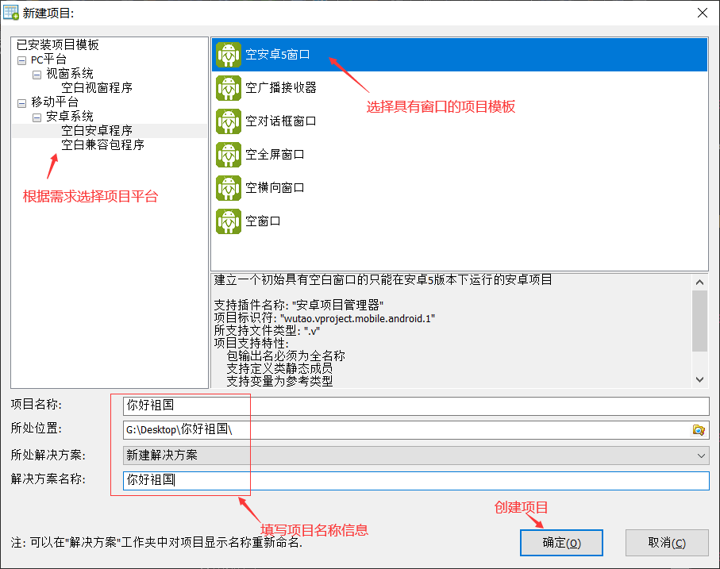
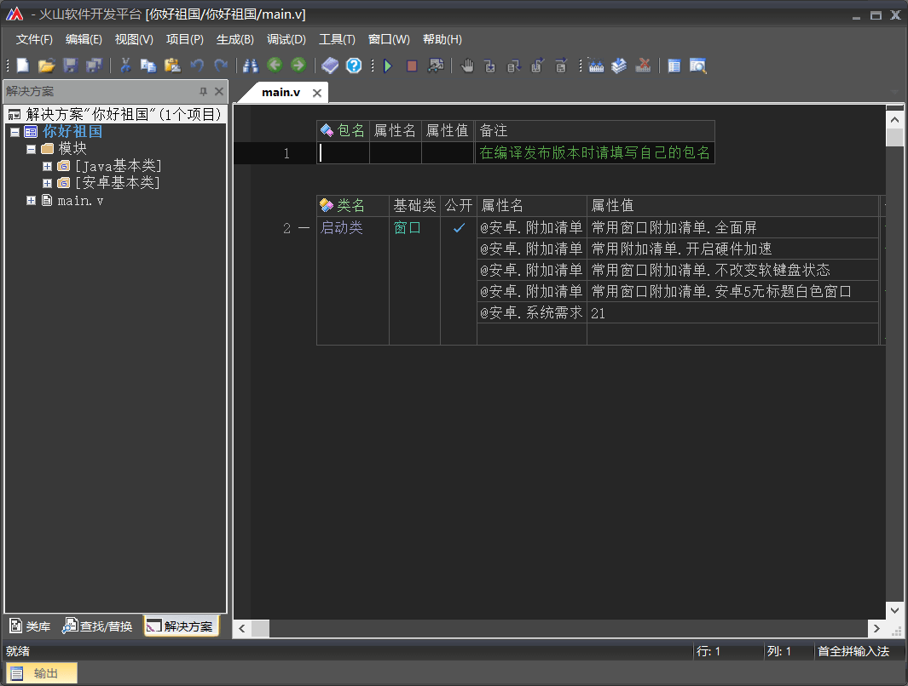
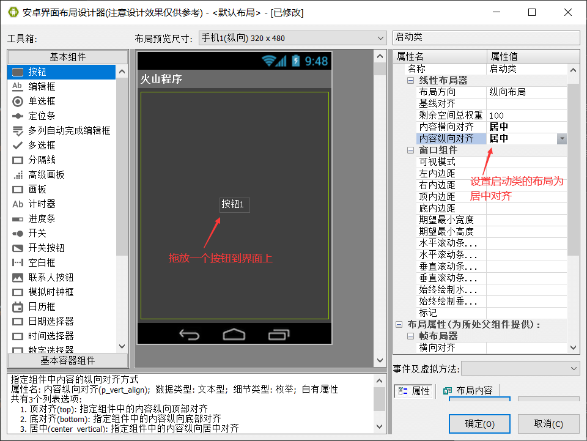
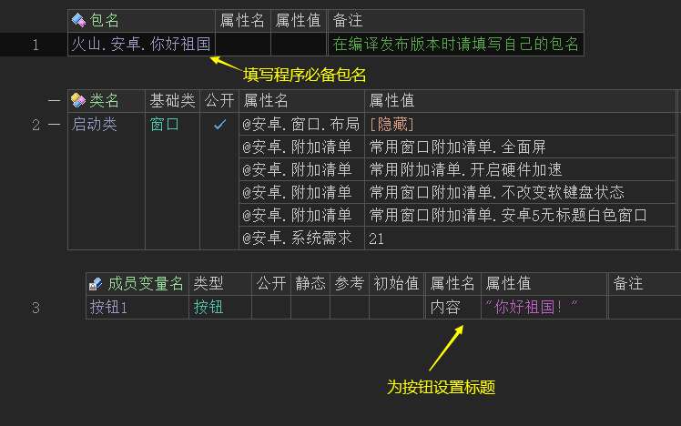
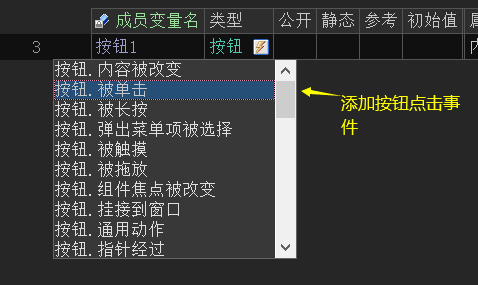
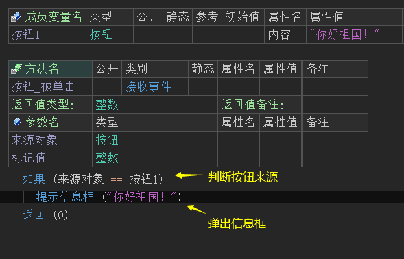
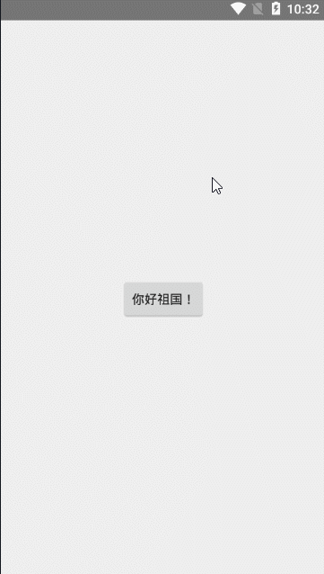

1、程序分析
在正式开发之前，首先需要对程序进行简单的分析。只有合理的分析程序界面以及要实现的功能之外，才能更好的开发这个软件。
如下：
运行平台：安卓平台，安卓5.0及以上系统。
界面设计：在窗口正中心位置放置一个按钮，并起名“你好祖国！”，因本程序界面并不复杂，可不用出效果图。
具体功能：点击按钮后弹出一个信息框，内容显示“你好祖国！”。
2、程序开发
2.1 项目创建
利用快捷键“Ctrl + Shift + N”打开项目创建窗口，根据需求选择一个安卓平台下具有窗口的项目模板。

项目创建完毕：

2.2 界面设计
使用快捷键“Ctrl + U”打开界面设计器，拖放一个按钮到界面中，并选择启动类的界面布局，设置其“内容横/纵向对齐”模式为居中。
最终就可以让按钮1居中对齐。

2.3 代码编写
(1) 首先填写程序必备的软件包名。
(2) 按照程序开发需求，设置按钮标题。

(3) 添加按钮被点击事件。

(4) 添加事件后，利用如果语句判断按钮来源，并在其子语句体内输入“提示信息框()”命令，用于显示一个内容为“你好祖国！”的信息框。
至此，程序代码编写完毕。

2.4 调试运行
在程序正式编译发布版之前，首先需要对程序进行调试工作，验证程序是否能够正常执行。
打开一个安卓模拟器(推荐使用雷电模拟器)，在模拟器运行完毕后，按下快捷键“F5”进行程序调试。

3、案例下载
点击下载当前教程案例。